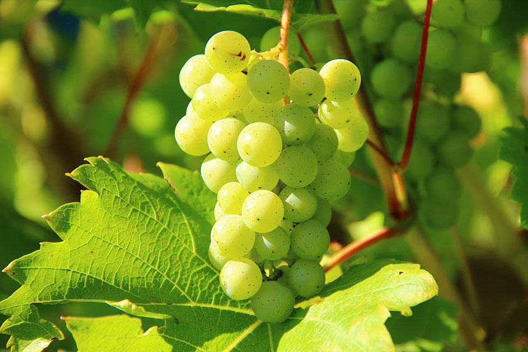

Thème : Les Châteaux Du Val De Loire
Combien y a-t-il de chateaux dans le Val De Loire ?
50
900
400
Voir la réponse
Parmis ces châteaux du Val de Loire, lesquels ont été une résidence royale ?
Chinon
Brissac
Villandry
Amboise
Valençay
Voir la réponse
À côté de combiens de châteaux passe la Loire ?
24
57
6
13
Voire la réponse
- Retour au Home
- Thème suivant